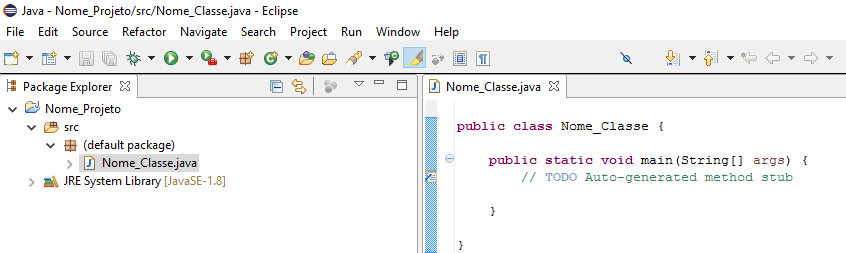

Parte I - Principiante
Lógica da Calculadora Simples
Como qualquer linguagem de programação, a linguagem Java tem a sua própria estrutura, regras de sintaxe e paradigma de programação. O paradigma de programação da linguagem Java é orientado a objetos. Podes consultar mais sobre isto aqui.
A linguagem Java deriva da linguagem C, portanto as suas regras de sintaxe assemelham-se às regras de C. Por exemplo, os blocos de códigos são modularizadas em funções e delimitados por chavetas ({ e }) e as variáveis são declaradas antes que sejam usadas.
Estruturalmente, a linguagem Java começa com pacotes. Um pacote é o mecanismo de namespace da linguagem Java. Dentro dos pacotes estão as classes e dentro das classes estão métodos, variáveis, constantes e mais.
Um ambiente de desenvolvimento integrado (IDE) trata-se de uma aplicação de software que integra diversas ferramentas essenciais para programar, tais como editor de código-fonte, compilador e depurador de erros. Neste caso, iremos utilizar o IDE Eclipse visto que é um dos mais utilizados na prática de programação em Java.
Para procederes à instalação do mesmo, segue este breve tutorial.
Vamos então proceder à criação do nosso primeiro projeto em Java. Após abrir o Eclipse vamos ter de escolher inicialmente o nosso workspace, que no fundo não passa de uma pasta no nosso computador onde vamos ter todos os nossos projetos. Podes escolher a pasta que preferes ou deixar por defeito a que aparece, como vês na imagem seguinte:
Após escolhido o nosso workspace vamos proceder à alteração da perspectiva do nosso IDE para Java para facilitar a criação do nosso projeto. Para tal segue os passos da próxima imagem:

Agora que já temos a nossa perspetiva definida para Java, vamos agora criar o nosso primeiro projeto em Java. Para tal, vai à barra de ferramentas do Eclipse, vai a File > New > Java Project. Caso tenhas dificuldades vê a próxima imagem para veres onde tens de carregar.

Vamos então configurar o nosso projeto, onde podes selecionar o nome deste ou o seu workspace, caso pretendas um diferente. De seguida tens uma imagem que ilustra o menu com que te vais deparar.

Nesta fase já tens o teu projeto criado, resta agora adicionar ficheiros Java, ou seja, onde vais escrever o teu código. Estes ficheiros são chamados de classes e podes explorar um bocado mais sobre elas neste link. Para criares a tua primeira classe, vê esta imagem:

Agora chegou a altura de configurares a classe, onde podes definir o seu pacote, o seu nome, entre outras definições. Por enquanto só nos interessa escolher o seu nome e colocar o visto como se pode ver na imagem:

Por esta altura deves ter o teu projeto configurado e pronto para começar a programar! Na imagem tens o exemplo de como te deve aparecer o projeto nesta altura:

Por esta altura deves ter o teu projeto vazio e pronto para começares a programar. Como tal, vamos experimentar imprimir algo na consola do nosso IDE. Para isso vais precisar de colocar o seguinte código no nosso ficheiro Java.
1. public class Nome_Classe {
2.
3. public static void main(String args[]){
4. System.out.println("Hello World!");
5. }
6.
7. }
Se estás um bocado confuso com o que é este código não te assustes, mais à frente vão ser explicados os conceitos implementados nele.
Agora que já colocaste o código no teu IDE, vamos executar e ver o que acontece, para tal segue a seguinte imagem:
Após teres executado o código, vai surgir na parte inferior do teu IDE uma janela chamada Console que vai apresentar o resultado da execução do código, como podes ver na imagem abaixo:
Variáveis são elementos que têm a capacidade de guardar informação de um programa. Estes podem ter qualquer nome e podem ser de muitos tipos. Podes consultar os diferentes tipos de variáveis existentes aqui.
Uma variável declara-se da seguinte maneira:
tipoDaVariavel nomeDaVariavel;
Por exemplo, se quisermos guardar uma variável idade podemos declará-la como um inteiro e assim podemos guardar esse valor.
int idade;
Se quisermos definir a variável idade como sendo 20 fazemos o seguinte:
idade = 20;
Podemos também definir variáveis com carateres. Por exemplo, se quisermos definir o nome de uma pessoa cujo nome é Artur fazemos o seguinte:
String nome = "Artur";
Para podermos iniciar a programar em Java temos que primeiro perceber o que é uma função. Funções são procedimentos que agrupam um conjunto de comandos no seu interior e que são executados quando o procedimento é chamado, retornando um valor no seu fim. Estas são implementadas dessa maneira para que se possa ter o código organizado, podendo-se chamar qualquer função em qualquer parte do código a qualquer altura. Uma função é declarada da seguinte maneira:
<tipo do valor retornado> nome_da_função ( <tipo> arg1, <tipo> arg2, ..., <tipo> argN){
<corpo da função>
return valor_de_retorno;
}
Assim, uma função pode receber x números de argumentos, que vão ser úteis para que se execute uma determinada função, e no final terá que retornar um valor do tipo indicado pela função. Se a função não necessitar de retornar nenhum valor esse tipo poderá ser "void".
Por vezes é necessária a interação do utilizador com o programa para que este possa fazer o que é suposto. Para isso, existem funções de origem no Java que permitem imprimir mensagens de texto para o utilizador ler e também funções que permitem ler respostas do utilizador.
Por exemplo, se tivermos uma função chamada pergunta idade poderemos ter o seguinte código:
int obtemIdade() {
int idade;
Scanner scanner = new Scanner(System.in);
System.out.print("Qual é a tua idade? ");
idade = scanner.nextInt(); return idade;
}
Esta função, quando chamada, começa por pedir a idade do utilizador através da função System.out.print("mensagem a enviar"), imprimindo a mensagem na consola. Em seguida o utilizador responde, ficando a resposta do mesmo guardada na variável idade e retornada no fim da função obtemIdade.
Tomadas de decisão ou condições boleanas são todas as expressão que retornam true(verdadeiro) ou false(falso). De maneira a fazermos comparações podemos usar os operadores <, >, <=, >= entre outros que vão permitir que se cheguem às conclusões. A base desta lógica é a seguinte
if (condicaoBooleana) {
se sim executa este codigo;
}
else {
se não executa este código;
}
Um possível exemplo de uma condição boleana é:
if (idade < 18) {
System.out.println("Não pode entrar na discoteca");
}
else{
System.out.println("Pode entrar na discoteca");
}
Este pedaço de código verifica se a variável idade é menor que 18. Se for, o programa imprime na consola que a pessoa não pode entrar na discoteca, se for igual ou maior o programa imprime na consola que essa pessoa tem idade para entrar numa discoteca.
1. import java.util.Scanner;
2. public class Main {
3. public static void main(String args[]){
4.
5. int op = 0;
6. Scanner in1 = new Scanner(System.in);
7.
8. System.out.println("Menu:");
9. System.out.println("Escolha o valor 1 para iniciar o programa.");
10. System.out.println("Escolha outro valor diferente de 1 para terminar o programa.");
11. System.out.println("Insira o valor: ");
12.
13. op = in1.nextInt();
14.
15. if(op == 1){
16.
17. String nome, atividade;
18.
19. Scanner in = new Scanner(System.in);
20. System.out.println("Insira o seu nome: ");
21.
22. nome = in.nextLine();
23.
24. System.out.println("Insira uma atividade que goste de praticar: ");
25.
26. atividade = in.nextLine();
27.
28. System.out.println("Olá, o meu nome é " + nome + " e gosto muito de praticar " + atividade + "!");
29. }
30. }
31.}
Neste programa simples, usamos outputs, inputs e ifs.Também usamos ints que são valores numéricos inteiros e Strings que são conjuntos de caractéres.
Na primeira parte, a linha 5 responsável por criar e inicializar o valor op a 0. Na linha 6 criamos um Scanner que é responsável por receber os inputs. De seguida nas linhas 8, 9, 10 e 11 criamos um conjuntos de linhas a imprimir no monitor de modo a que utilizador compreenda o que é esperado da sua parte. Após isto, a linha 13 é responsável por ficar a aguardar um valor introduzido pelo utilizador e guardá-lo na variável op.
Na linha 15 usamos um if para verificar se a variável op é 1, se for, realiza as intruções que estão dentro das chavetas, se não ignora essas intruções, que neste caso em concreto significa o fim do programa. Dentro do if, temos na linha 17 a criação de duas strings, a nome e atividade que iremos usar para guardar valores. De seguida criamos de novo outro Scanner para conseguir receber inputs e fazemos alternadamente output ao utilizador (linhas 20, 24, 28) e input do utilizador (linhas 22 e 26), sendo que no output final é construído uma linha de texto mais complexa sendo usadas as strings criadas na linha 17.
1. import java.util.Scanner;
2. public class Main {
3. public static void main(String[] args) {
4.
5. double n1, n2;
6. String op;
7.
8. Scanner in = new Scanner(System.in);
9. System.out.println("Insira o primeiro número.");
10. n1 = in.nextDouble();
11. System.out.println("Insira a operação.");
12. op = in.next();
13.
14. System.out.println("Insira o segundo número.");
15. n2 = in.nextDouble();
16.
17. if(op.equals("+"))
18. System.out.println(n1 + " " + op + " " + n2 + " = " + (n1 + n2));
19. else if(op.equals("-"))
20. System.out.println(n1 + " " + op + " " + n2 + " = " + (n1 - n2));
21. else if(op.equals("/")){
22. if(n2 != 0)
23. System.out.println(n1 + " " + op + " " + n2 + " = " + (n1 / n2));
24. else
25. System.out.println("Não podem ser feitas divisões por 0.");
26. }
27. else if(op.equals("*"))
28. System.out.println(n1 + " " + op + " " + n2 + " = " + (n1 * n2));
29. else
30. System.out.println("Inseriu uma operação incorreta.");
31. }
32. }
Para a realização da calculadora utilizazmos todos os conhecimentos adquiridos previamente. Começamos por declarar as variáveis n1 e n2 que irão ser os valores numéricos e uma string op que irá ser a operação. De seguida é criado um Scanner para podermos receber inputs e são feitos 3 outputs e 3 inputs alternadamente de modo a pedir o primeiro valor e receber esse valor, o mesmo para a operação e o mesmo para o número final. Continuando, para mostrar o resultado no monitor ainda falta verificar de que tipo de operação se trata. Deste modo, temos de verificar o valor da variável op para conseguir imprimir o valor final correto. No entanto, há algumas exceções que temos de prestar atenção:
1. Divisão por 0 não é possível, pelo que temos um if em que caso seja uma divisão, se o segundo número for 0 é apresentada uma mensagem específica.
2. Valores que não são esperados pelo programa, fazem com que este não consiga correr corretamente não levando ao resultado esperado, de modo que, caso não exista o valor da operação inserida, é também apresentada uma mensagem específica para esse erro.
E deste modo concluimos a criação de uma calculadora bastante simples.
Parte II - Avançado
Calculadora Avançada
O while é um comando usado para fazer um ciclo de um determinado código, isto é, repetir um trecho de código um determinado número de vezes. A ideia é que esse pedaço de código seja repetido enquanto uma determinada condição permanecer verdadeira.
int idade = 15;
while (idade < 18) {
System.out.println(idade);
idade = idade + 1;
}
Neste caso, o código no interior do while será executado até ao momento em que a condição idade < 18 passe a ser falsa. Neste caso em que a idade aumenta em 1 a cada fim de ciclo, isso ocorrerá exatamente no momento em que idade for igual a 18, o que fará com que deixe de imprimir a idade e com que o 18 não seja imprimido.
Outro comando de ciclos extremamente utilizado é o for. A ideia é a mesma do while: executar um pedaço de código repetidamente enquanto uma determinada condição continuar verdadeira. A maneira correta de escrever um ciclo for é:
for (inicializacao; condicao; incremento) {
codigo;
}
Um exemplo de uso desta função é o seguinte:
for (int i = 0; i < 10; i = i + 1) {
System.out.println("olá!");
}
Nesta função vai ser imprimido na consola a expressão "olá", isto é, o número de vezes que o código deste ciclo vai correr é igual a 10. Um dado curioso é o facto de este ciclo for poder ser substituído por um ciclo while que tem exatamente a mesma função:
int i = 0;
while (i < 10) {
System.out.println("olá!");
i = i + 1;
}
Em termos de legibilidade e compreensão do código a versão do for indica claramente que a variável i serve para controlar a quantidade de ciclos executados, ao contrário do ciclo while. Podemos assim usar ambos os tipos de ciclo, dependendo apenas do gosto de cada um pois estes têm funções muito semelhantes
O Java possui um recurso específico para quando temos uma variável de decisão a definir qual a condição que queremos correr, ao invés de colocarmos vários if's em cadeia. A sua maneira de execução é a seguinte:
switch( variavel de decisão )
{
case opção1:
comandos caso a opção 1 tenha sido escolhida
break;
case opção2:
comandos caso a opção 2 tenha sido escolhida
break;
default:
comandos caso nenhuma das opções anteriores tenha sido escolhida
}
De modo a tornar a calculadora criada previamente mais robusta, iremos adicionar um ciclo infinito de modo a não ter de reiniciar sempre o programa para fazer uma conta. Assim fazemos todas as contas desejadas e termina-se o programa no final. O programa é idêntico ao anterior à exceção do ciclo while, alguns outputs e um novo pedido de input que pergunta se desejamos terminar o programa, pelo que se respondermos "y", o programa termina, caso contrário, continua a pedir valores para realizar contas. Inclui ainda o switch que lida com as diferentes possibilidades de respostas.
1. import java.util.Scanner;
2.
3. public class Main {
4.
5. public static void main(String[] args) {
6.
7. System.out.println("Bem-vindo ao programa da calculadora");
8. String end = "n";
9.
10. while(true){
11.
12. double n1, n2;
13. String op;
14.
15. Scanner in = new Scanner(System.in);
16.
17. System.out.println("Insira o primeiro número.");
18. n1 = in.nextDouble();
19.
20. System.out.println("Insira a operação.");
21. op = in.next();
22.
23. System.out.println("Insira o segundo número.");
24. n2 = in.nextDouble();
25. switch(op){
26. case "+":
27. System.out.println(n1 + " " + op + " " + n2 + " = " + (n1 + n2)); break;
28.
29. case "-":
30. System.out.println(n1 + " " + op + " " + n2 + " = " + (n1 - n2)); break;
31.
32. case "/":
33. { if(n2 != 0)
34. System.out.println(n1 + " " + op + " " + n2 + " = " + (n1 / n2));
35. else
36. System.out.println("Não podem ser feitas divisões por 0."); break;
37. }
38.
39. case "*":
40. System.out.println(n1 + " " + op + " " + n2 + " = " + (n1 * n2));
41.
42. default:
43. System.out.println("Inseriu uma operação incorreta.");
44. }
45. System.out.println("Deseja terminar o programa? y para terminar, n para não terminar.");
46. end = in.next();
47.
48. if(end.equals("y"))
49. break;
50.
51. }
52. }
53. }